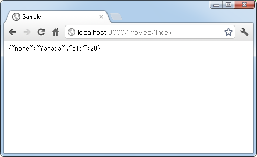
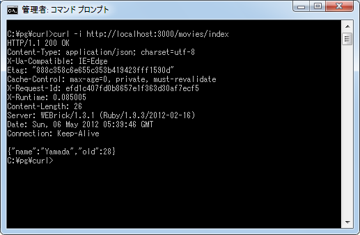
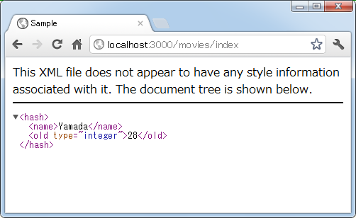
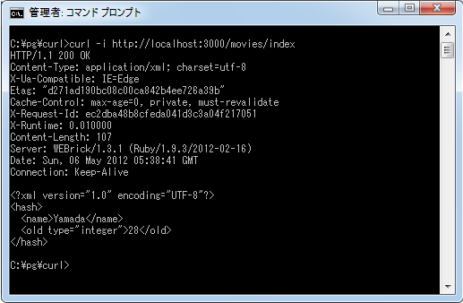
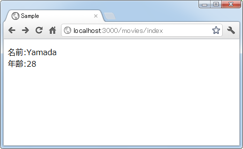
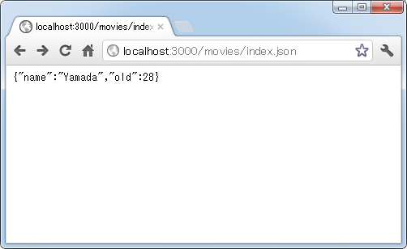
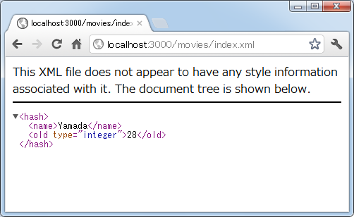

JSON/XML形式で出力する
データベースから取得したデータをJSON形式やXML形式で返したい場合があります。ここではrenderメソッドを使ってJSON形式やXML形式で利用者へ結果を返す方法を解説します。またrespond_toメソッドを使いリクエストで指定されたフォーマットに合わせて出力する形式を決める方法についても解説します。
1.JSON形式で出力
2.XML形式で出力
3.respond_toメソッドを使った形式の選択
JSON形式で出力
JSON形式で出力を行なうには次の書式を使います。
render :json => オブジェクト
オブジェクトをJSON形式に変換した上で利用者へ返します。
では実際に試してみます。作成済みのコントローラクラス(app/controllers/movies_controller.rb)の中の「index」アクションメソッドを次のように修正します。
class MoviesController < ApplicationController
def index
personal = {'name' => 'Yamada', 'old' => 28}
render :json => personal
end
end
では「sample」アプリケーションを実行し、ブラウザから「http://localhost:3000/movies/index」へアクセスして下さい。すると次のように表示されます。

テスト用に作成したハッシュがJSON形式に変換されて返ってきていることが確認できます。
なおcurlを使って帰って来た結果を確認してみると次のように「Content-Type: application/json; charset=utf-8」として返ってきていることが確認できます。

XML形式で出力
XML形式で出力を行なうには次の書式を使います。
render :xml => オブジェクト
オブジェクトをXML形式に変換した上で利用者へ返します。
では実際に試してみます。作成済みのコントローラクラス(app/controllers/movies_controller.rb)の中の「index」アクションメソッドを次のように修正します。
class MoviesController < ApplicationController
def index
personal = {'name' => 'Yamada', 'old' => 28}
render :xml => personal
end
end
では「sample」アプリケーションを実行し、ブラウザから「http://localhost:3000/movies/index」へアクセスして下さい。すると次のように表示されます。

テスト用に作成したハッシュがXML形式に変換されて返ってきていることが確認できます。
なおcurlを使って帰って来た結果を確認してみると次のように「Content-Type: application/xml; charset=utf-8」として返ってきていることが確認できます。

今回はテスト用データを使いましたが、データベースから取得したデータを指定の形式で取得したい場合に便利です。
respond_toメソッドを使った形式の選択
通常はHTML形式で結果を取得したいけど、明示的に指定した場合はJSON形式やXML形式でも取得したい、といったケースではrespond_toメソッドを使用すると便利です。次のような書式で使用します。
def index
respond_to do |format|
format.html
format.json {render :json => オブジェクト}
format.xml {render :xml => オブジェクト}
end
end
リクエストに明示的にフォーマットの指定が無かった場合はindexアクションのデフォルトのテンプレートが呼び出されて結果が返されますが、リクエストのフォーマットが指定されていた場合、それが「json」なら「render :json => オブジェクト」と返し、「xml」なら「render :xml => オブジェクト」を使って返します。
では実際に試してみます。作成済みのコントローラクラス(app/controllers/movies_controller.rb)の中の「index」アクションメソッドを次のように修正します。
class MoviesController < ApplicationController
def index
@personal = {'name' => 'Yamada', 'old' => 28}
respond_to do |format|
format.html
format.json {render :json => @personal}
format.xml {render :xml => @personal}
end
end
end
また「index」アクションから呼び出される「app/views/movies/index.html.erb」というテンプレートを次のように作成しました。
<p> 名前:<%= @personal["name"] %><br /> 年齢:<%= @personal["old"] %> </p>
アクションで設定されたインスタンス変数の値を取り出しHTML文を作成します。
では「sample」アプリケーションを実行し、ブラウザから「http://localhost:3000/movies/index」へアクセスして下さい。すると次のように表示されます。

リクエストでフォーマットを指定しなかった場合はテンプレートが呼び出され、結果はHTML文として返ってきます。今度はフォーマットとして「.json」を付けた「http://localhost:3000/movies/index.json」へアクセスして下さい。すると次のように表示されます。

テスト用に作成したハッシュがJSON形式に変換されて返ってきていることが確認できます。最後にフォーマットとして「.xml」を付けた「http://localhost:3000/movies/index.xml」へアクセスして下さい。すると次のように表示されます。

テスト用に作成したハッシュがXML形式に変換されて返ってきていることが確認できます。
このようにrespond_toメソッドを使うことで、リクエストで指定されたフォーマットに合わせて結果を返すことができます。
( Written by Tatsuo Ikura )

著者 / TATSUO IKURA
初心者～中級者の方を対象としたプログラミング方法や開発環境の構築の解説を行うサイトの運営を行っています。